Work Step 1 - 9
Work step: 1
Indicated on display
- Press buttons -0- and -2- to select "Check DTC Memory" function 02.
- Press -Q- button to confirm input.
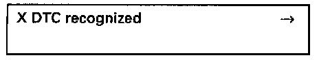
The number of malfunctions stored or "No DTC recognized" will be shown on the display.
- Locate and eliminate malfunctions printed out as per DTC table. Diagnostic Trouble Code Descriptions
- Press -> button.
Work step: 2

Display will appear as shown
- Press buttons -0- and -5- to select "Erase DTC memory" function 05.
- Press -Q- button to enter in put.
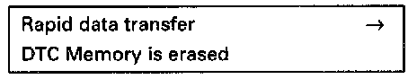
Display will appear as shown
- Press -> button.
Work step: 3
Diagnostic test: Engine warm-up
- Press -0- and -8- buttons to select "Read measuring value block" function 08.
- Press -Q- button to enter input.
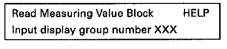
Display will appear as shown
- Press buttons -1-, -0- and -3- to input display group 103.
- Press -Q- button to enter input.
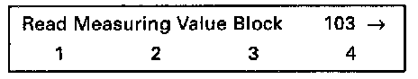
Display will appear as shown (1 to 4 = display fields)
- Increase engine speed to 3000-3500 RPM and check specifications after 60 seconds.
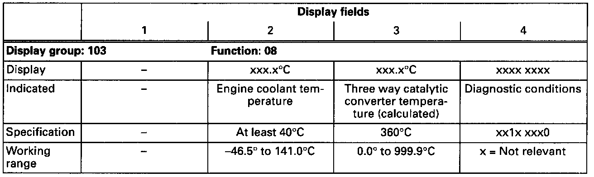

- Press -> button.
Work step: 4
Diagnostic test: Engine warm-up continued (calculated temperature of three way catalytic converter)
Display will appear as shown
- Press -0- and -4- buttons to select "Basic setting" function 04.
- Press -Q- button to enter input.

Display will appear as shown
- Press buttons -1-, -0- and -3- to input display group 103.
- Press -Q- button to enter input.
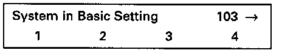
Display will appear as shown (1 - 4 = display fields)
- Increase engine speed to 2200-3300 RPM and wait until three way catalytic converter temperature reaches specifications.
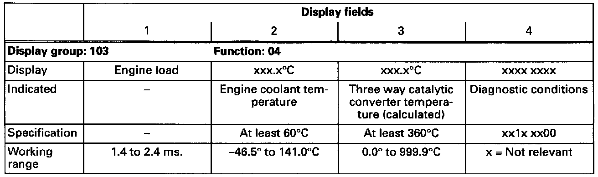

- Press -C- button.
Work step: 5
Diagnostic test: Oxygen Sensor (02S) aging (regulating frequency extended)

Display will appear as shown
- Press 1-, -3- and -1- buttons to input display group 131.
- Press -Q- button to enter input.
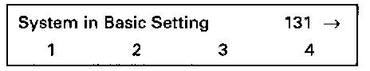
Display will appear as shown (1 to 4 = display fields)
- Run engine at idle and check specifications.

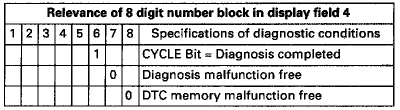
- Press -C- button.
Work step: 6
Diagnostic test: Fuel adaptation under partial throttle
Display will appear as shown
- Press -1-, -2- and -5- buttons to input display group 125.
- Press -Q- button to enter input.

Display will appear as shown (1 to 4 = display fields)
- Test drive per the following conditions.
Road test procedure
NOTE:
Avoid deceleration fuel cut-off during this diagnostic test. It causes the three way catalytic converter to store oxygen, diagnostic test will then be blocked for at least 10 seconds.
- Transmission Range 2 or 2nd gear must be selected
- Engine speed must be kept between 2500 and 4000 RPM
- Continue test drive until specifications are attained
- Check specifications during test drive (second technician necessary).
WARNING:
When driving or riding in an airbag-equipped vehicle:
- Never hold test equipment in your hands or lap while the vehicle is in motion. Objects between you and the airbag can increase the risk of injury in an accident.
- Secure tools or test equipment on passenger side floor where it can be safely read by the second technician.
- Continue test drive until all specifications are obtained.

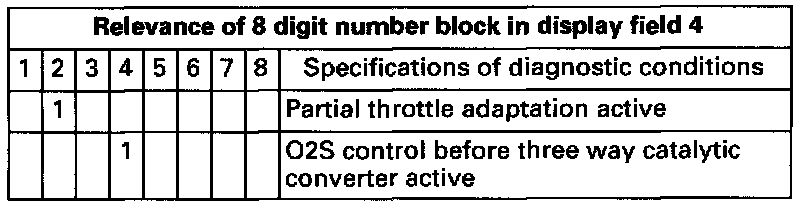
Work step: 7
Diagnostic test: Fuel adaptation during closed throttle position
Test conditions
- Bring vehicle to stationary position and let idle

Display will appear as shown (1 - 4 = display fields)
- Check specifications after 30 seconds.
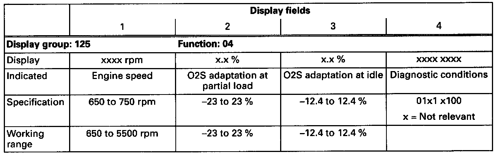
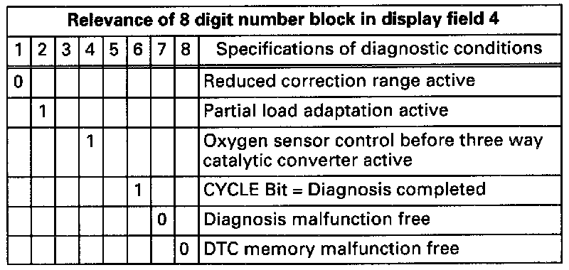
- Press -C- button.
Work step: 8
Diagnostic test: Secondary Air Injection (AIR) system
- Vehicle stationary
NOTE: Not all vehicles have this system installed. If this system is not found on the vehicle you are working with; skip this work step.

Display will appear as shown
- Press buttons -1-, -6- and -0- to input display group 160.
- Press -Q- button to enter input.
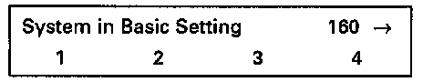
Display will appear as shown (1 - 4 = Display fields)
- Allow engine to idle and check specifications after 20 seconds.

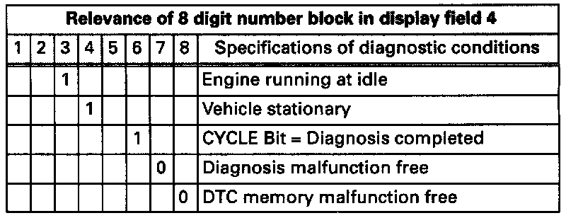
- Press -C- button.
Work step: 9
Diagnostic test: Oxygen Sensor (O2S) aging (regulating frequency extended)
- Vehicle stationary
Display will appear as shown
- Press buttons -1-, -3- and -0- to input display group 130.
- Press -Q- button to enter input.
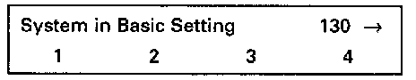
Display will appear as shown (1 to 4 = display fields)
- Raise engine RPM between 2500 and 3500 for 20 seconds, then check specifications.
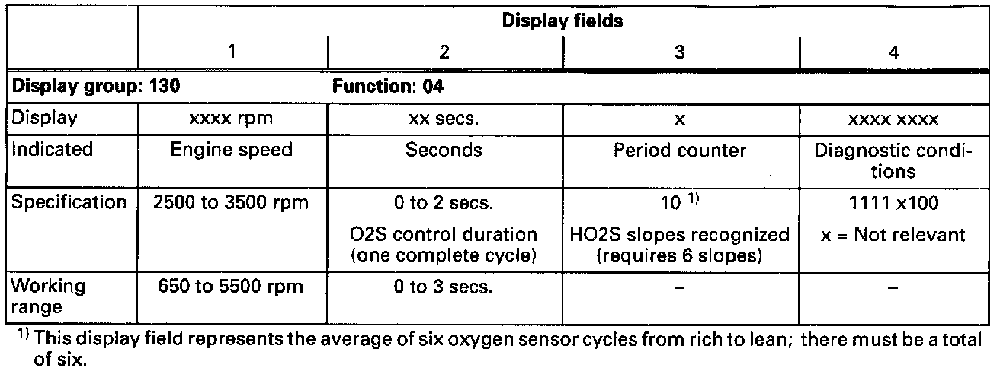

- Press -C- button.
- Continue on to the Work Step 10.